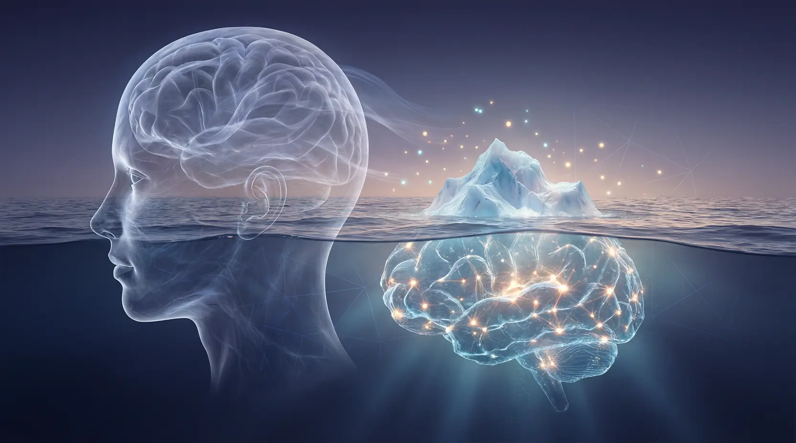
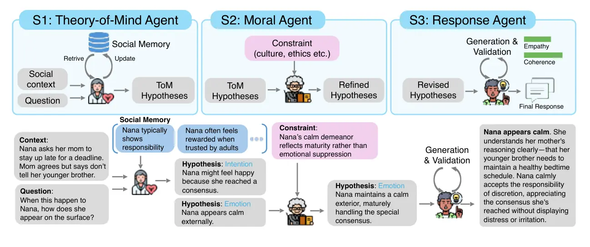
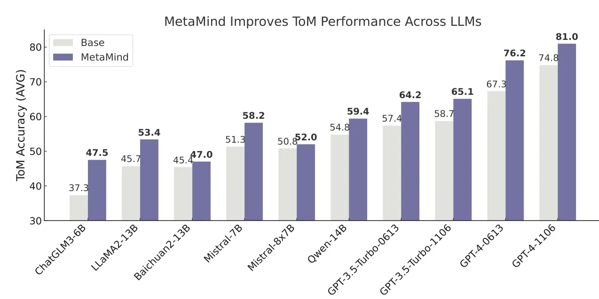
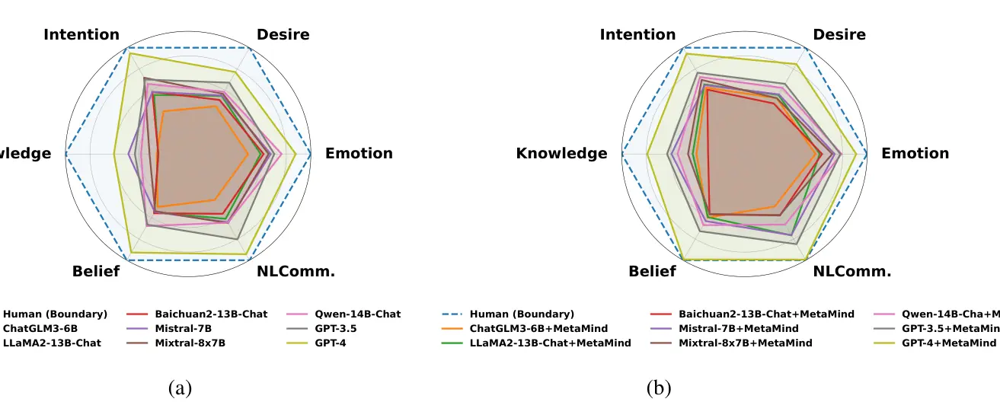

The Problem · 未说出口的意图
“这里有点冷。”——它到底想说什么？
同一句“这里有点冷”，可能只是陈述、可能是请你关窗的委婉请求、也可能是在寻求一句体贴。人类靠推断说话者的信念、欲望、情绪与意图——这些无法直接观测的心理状态——瞬间读懂弦外之音。这种能力被称为心智理论（Theory of Mind, ToM），约在儿童四岁时萌发。
大语言模型恰恰在这里跌倒。它们擅长语义理解、生成流畅文本，却难以应对真实沟通中的模糊、含蓄与文化敏感。已有工作多用静态角色扮演提示或偏好数据微调来“注入”社交行为，但它们只优化了表层的统计对齐，把社会推理当作一次性预测——而非人类那样“解释 → 反思 → 适应”的分层元认知过程。

“人们意图表达的，往往远超其字面所言——而这正是对话得以可能的原因。” — H. P. Grice
Core Contributions · 核心贡献
论文做了什么
一个受元认知启发的多智能体社会推理框架
MetaMind 把社会理解显式分解为三个协作阶段：推断心理状态 → 依社会/伦理约束精炼 → 生成并自我校验回应，同时随交互适配用户的个体化模式。这是首个把「心智理论 + 社会规范约束 + 演化的社会记忆」统一进一个系统的架构。
在多个高难基准上达到 SOTA，并追平人类
横跨 16+ 主流 LLM 的系统评测表明：MetaMind 显著提升上下文准确度与社会得体性，在真实社交场景平均提升 35.7%、整体社会认知提升 9.0%，并首次让 LLM 在关键 ToM 任务上匹配人类平均表现。
深入消融，证明每个组件都不可或缺
通过对每个 Agent、社会记忆、关键设计的细致消融，论文证明三个阶段缺一不可：结构化假设生成、伦理约束精炼、迭代式校验各自贡献不同能力维度，共同支撑起可泛化的社会智能。
Architecture · 架构设计
三阶段的元认知回路
MetaMind 用三个各司其职的智能体，镜像人类“反思自己的思考、依社会规范修正理解、再在复杂情境中调整行为”的元认知过程。它们围绕一个动态的 社会记忆（Social Memory） 协同运转。

生成心理状态假设
不急于回答，而是先构造对用户「在想什么、感受什么」的多个候选解释。给定输入 X = (用户话语 ut, 社会上下文 Ct, 社会记忆 Mt)，生成一组带自然语言解释与类型标签的假设 Ht={h1…hk}。
五类心理状态标签：信念 Belief · 欲望 Desire · 意图 Intention · 情绪 Emotion · 想法 Thought。四步推理：常识假设 → 交叉比对社会记忆 → 识别 ToM 标记 → 生成 k 个候选。
依规范精炼与择优
评估这些解释在文化期待、伦理规范、角色身份下是否得体，对每个假设生成修订版 h̃i（如把职场中被误判的“浪漫意图”重释为“同事式欣赏”），再按复合目标择优：
h̃* = argmaxi [ λ·P(h̃i|u,C,M) + (1−λ)·log P(h̃i|u,C,M)/P(h̃i) ]左项 = 上下文合理性；右项 = 信息增益（该解释被上下文告知的程度）。
生成回应并自我校验
以最优假设 h̃* 与社会记忆为条件解码回应，并加入自反思机制，用效用分数衡量社会与语义质量；分数过低则触发重生成。
U(o) = β·Empathy(o,u,M) + (1−β)·Coherence(o,C,h̃*)共情（情感对齐）与连贯（上下文一致）加权，是响应质量的自我标尺。
动态演化的社会记忆
贯穿全流程的结构化知识库，遵循三原则：情境接地（依场景与角色初始化）、用户建模更新（用经校验的长期假设 h′ 汇总持久用户状态）、反馈纠偏（低效用/被纠正时下调旧模式权重）。它让系统能跨轮次记住偏好与情绪模式。
最优超参：k=6 个假设，λ=0.60，β=0.80。
Results · 实证结果
数据说话
平均提升
能力提升
（74.8→81.0）
(vs GPT-4.5 / R1)
评测覆盖三大高难基准——ToMBench（心智理论推理）、社会认知任务集（8 项）、STSS 沙盒社会模拟（6 域），恰好对应三个阶段的核心能力。
① 跨模型的心智理论提升

② 心智理论六维度对比（ToMBench）
| 方法（GPT-4） | 情绪 | 欲望 | 意图 | 知识 | 信念 | NL 沟通 | 平均 |
|---|---|---|---|---|---|---|---|
| Base (GPT-4) | 75.7 | 69.7 | 84.7 | 52.1 | 82.8 | 84.0 | 74.8 |
| w. CoT | 73.2 | 63.3 | 77.9 | 60.4 | 83.6 | 83.0 | 73.6 |
| w. ToM2C | 77.2 | 70.4 | 81.5 | 57.8 | 85.3 | 84.6 | 76.1 |
| w. SymbolicToM | 75.9 | 70.9 | 79.6 | 58.2 | 84.0 | 83.7 | 75.4 |
| w. MetaMind (ours) | 78.7 | 76.5 | 84.3 | 68.2 | 88.6 | 88.5 | 81.0 |
③ 社会认知八任务
| 方法（GPT-4） | UOT | SIT | PST | FBT | AST | HT | SST | FRT | 平均 |
|---|---|---|---|---|---|---|---|---|---|
| Base (GPT-4) | 71.0 | 49.0 | 65.0 | 88.2 | 77.5 | 82.5 | 84.0 | 73.3 | 71.5 |
| w. Generative Agents | 73.2 | 56.8 | 57.8 | 87.1 | 83.6 | 81.9 | 85.8 | 75.9 | 75.3 |
| w. MetaMind (ours) | 81.5 | 60.4 | 64.8 | 90.1 | 88.8 | 86.2 | 88.4 | 83.9 | 80.5 |
AST +11.3%、SIT +11.4%、FRT +10.6%——在需要消解矛盾线索、参照隐性文化规则的任务上增益最大。
④ 沙盒社会模拟（STSS，开放式生成）
| 方法（GPT-4） | 对话 | 公共活动 | 约会 | 邀约 | 线上活动 | 求助 | 平均 |
|---|---|---|---|---|---|---|---|
| Base (GPT-4) | 48.6 | 59.6 | 1.2 | 2.3 | 63.4 | 61.5 | 39.4 |
| w. TDP | 72.3 | 75.9 | 40.0 | 20.0 | 68.6 | 50.0 | 54.4 |
| w. MetaMind (ours) | 80.8 | 81.9 | 65.0 | 67.1 | 75.1 | 73.0 | 73.9 |
从 39.4 → 73.9，几近翻倍；在需要追踪“预算/日程冲突”等未言明约束的任务上（约会、邀约）跃升尤为剧烈。
⑤ 逼近人类的能力剖面

⑥ 对顶级推理模型同样有效
| 模型 | Base | + MetaMind | 增益 |
|---|---|---|---|
| Claude 3.5 Sonnet | 70.7 | 81.0 | ▲ +10.3 |
| DeepSeek-R1 | 86.0 | 88.6 | ▲ +2.6 |
| OpenAI o1 | 88.6 | 90.3 | ▲ +1.7 |
| OpenAI o3 | 90.3 | 92.2 | ▲ +1.9 |
即便是已具强推理能力的前沿模型，元认知结构化仍能带来一致增益——印证框架的兼容性与可扩展性。
去掉 Stage 1（心理状态推理）→ 社会认知平均降 2.6%（高模糊任务 UOT −4.3%）；去掉 Stage 2（规范精炼）→ 降 3.8%（失礼识别 FRT −5.5%）；去掉 Stage 3（校验）→ STSS 骤降 16.1%（对话域 −22.1%）；去掉 社会记忆 → 全面下滑。结论：社会智能需要分层的认知架构，没有任何组件可以省略。
将 MetaMind、GPT-4.5、DeepSeek-R1 的输出匿名打乱后交由领域专家依清晰度、深度、科学严谨性排序：MetaMind 胜率 67.5%（81/120），显著优于 GPT-4.5（12.5%）与 DeepSeek-R1（20.0%）。
Takeaway · 结语
为什么这项工作重要
人类社会智能的核心，是推断那些“未说出口的心理状态”的能力。MetaMind 用一个受元认知启发、模型无关、即插即用的三阶段框架，把这种能力系统性地赋予 LLM——并首次让 LLM 在关键 ToM 任务上追平人类。
它证明了：通往社会智能的道路，不在于更大的模型或更多的数据，而在于更接近人类的认知架构——结构化的假设生成、规范约束下的反思、以及带自我校验的迭代。这为共情对话、文化敏感交互等应用打开了新的可能，也为下一步“认知稿”中更深的洞察埋下了伏笔。